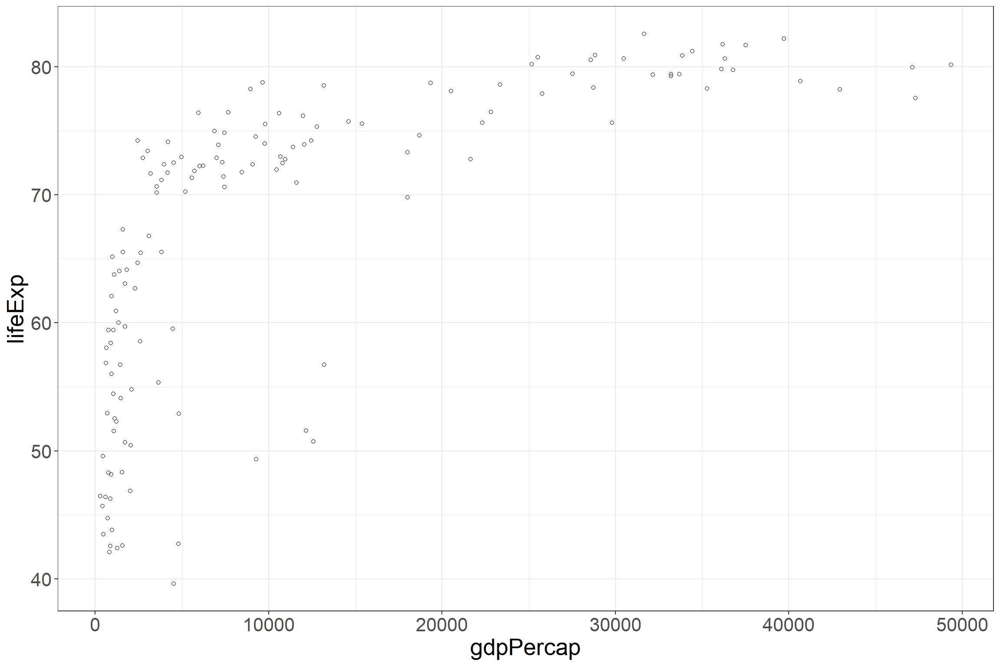
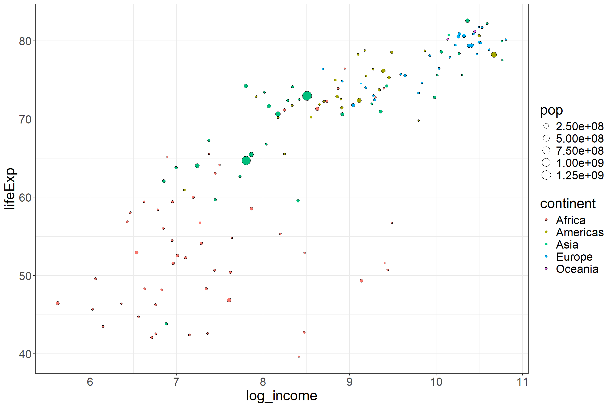
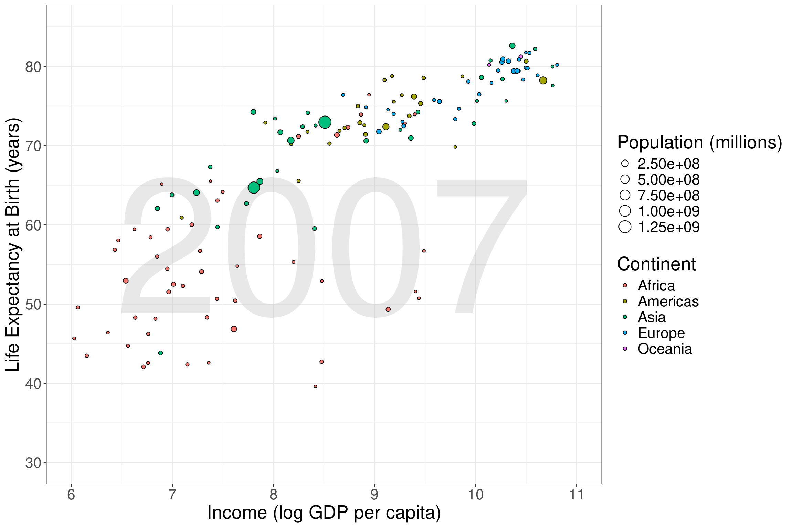
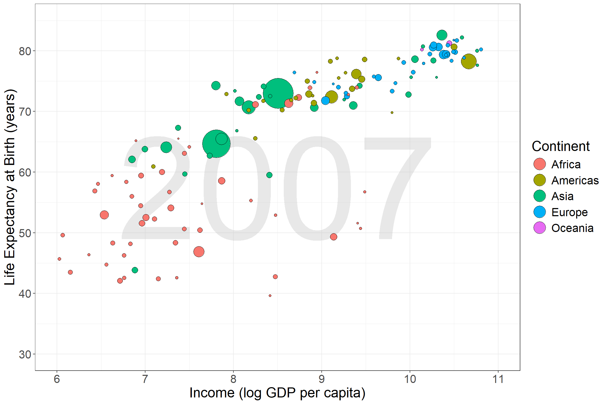
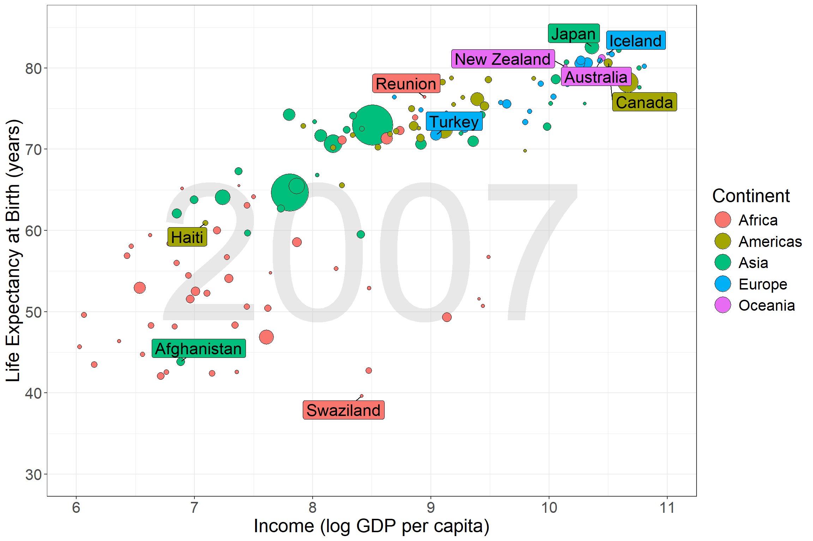
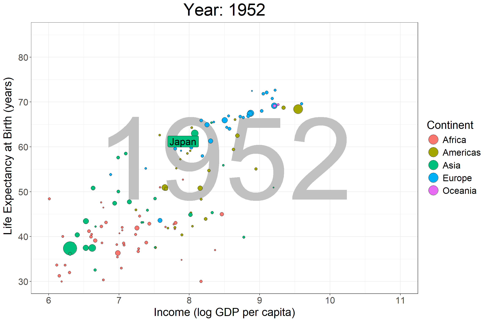
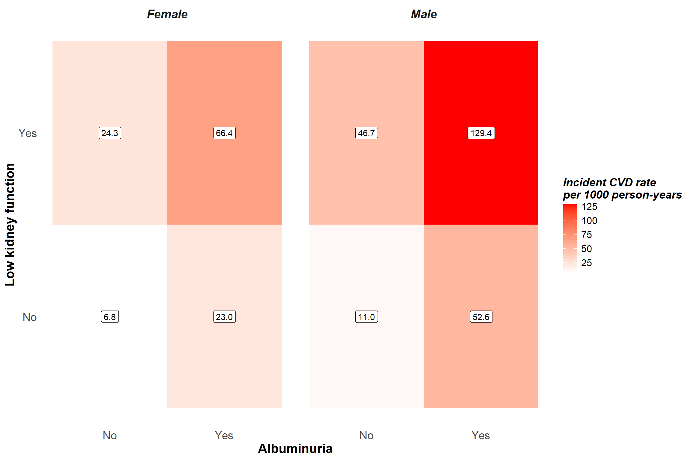

# Load libraries
suppressPackageStartupMessages({
#For the main problems
library(gapminder)
library(tidyverse)
library(ggrepel)
#For the optional problem
library(gganimate)
library(gifski)
})
#Create the gap_data dataset
gap_data <- gapminder |>
#Keep only rows where the year is 2007
filter(year == 2007) |>
#Label column is computed for each continent, separately
#Group data by continent before creating the label column
#This column will be used for later questions
group_by(continent) |>
mutate(
#Income is highly skewed; create a log scale variant for ease
log_income = log(gdpPercap),
#The country_label column is used later
country_label = case_when(
lifeExp %in% c(min(lifeExp), max(lifeExp)) ~ country
)
)BST680 Midterm
Instructions
This midterm is comprised of two portions:
A visualization using a curated variation of the
gapminderdatasetA data manipulation and summarisation exercise emphasizing
gtoutput
For each question, provide your code in order to create the requested output and comment your code either within the code block or by adding annotations directly to the Quarto document. I’m less interested in the specific code you used than I am understanding your thought process in order to get to the solution. Your comments are critical and should be provided as if to direct someone who has never seen your code to be able to reproduce it easily and know why you settled on these options.
Warning
To best accomplish these coding tasks, you’ll need to work with functions that we may have only briefly discussed in class
Part of this course is to develop your skill set to discover and use functions you may not have been aware of previously
Again, look at the references and cheat sheets, they’re your friends
Good luck!
To get you started, a zipped file with all the necessary files and folders can be [downloaded here]
Tip
You can check your work as you go through the assignment by viewing the midterm html document available online
Conversely you can open “midterm_start_here.html” locally, click on it in the ‘Files’ pane of Rstudio and then select the ‘View in web browser option’
Every problem has the answer displayed in this document so you can verify whether you have gotten the expected result
Part 1 - Visualization with gapminder
Prepping the data
We will be using a curated version of the
gapminderdatasetFor more details on the Gapminder organization, see https://www.gapminder.org/about-gapminder/
You’ll find the modified variation of the
gapminderdata below calledgap_data; you may continue to use this name
Problem 1
Using gap_data, create the following plot, use theme elements such as a different backgrounds or text sizes to personalize your plot; it doesn’t need to match my conventions exactly but be creative
Notes:
The x-axis and y-axis labels indicate which columns in
gap_datawere used to make the dataYou will want to use
geom_point(shape = 21)to set the fill of points later in the assignment

Problem 2
Make some adjustments:
Use
log_incomeinstead ofgdpPercapas the x variableMake the countries (i.e. the points) have fills that correspond to the continent which the country belongs to
Make the size of points proportional to the population of the country

Problem 3
Make a few more adjustments:
Set the limits of the x-axis between 6 and 11 (i.e.
xlim = c(6, 11))Set the limits of the y-axis between 30 and 85 (i.e.
ylim = c(30, 85))Add an annotation layer in the center of the plot indicating the year
Clean up the labels for the axes and legends
Tip
There are multiple ways to to do 3 such as using annotate or geom_text; I would recommend annotate to start but geom_text could prove easier for later questions
You might want to consider xlim, ylim and the mean function to help position your label in the exact center of the plot

Problem 4
Make some additional adjustments to your plot:
Set the range of point sizes as
c(1,20)hint: you’re using size is an aesthetic which means it has ascale_Remove the point size portion from the legend guide
Increase the size of points in the fill portion of the legend
Tip
For 2 and 3, you will need to make use of the guides() function from ggplot2
For 3 you will be using override.aes as an argument specifically
Spend some time with the reference manual and cheat sheets if necessary
Problem 5
Try arranging gap_data by population size, in descending order, prior to plotting
This plot may or may not appear different compared to problem 4
In your comments, explain why there is or isn’t a difference in the plot

Problem 6
Include the following label annotations on your plot:
Add a
geom_label_repellayer to the plot that indicates which country in each continent has the highest or lowest life expectancyUse
show.legend = FALSEto stop the text from being incorporated into the legend;
Tip
Make sure all the labels are the same size and NOT proportional to the population size
Think about how you want use size and ask “is it an aesthetic or an argument?”

Problem 7
Important
This problem is optional and will require the original gapminder dataset
Get creative with animations
Use the
gganimatepackage to make a smooth animation to update the background image of theyearvariable in the plotPut a label over one country of your choosing
For added challenge, find a way to make the year label in the background smoothly transition without showing decimal places
Tip
You can find a great gganimate tutorial here: https://github.com/thomasp85/gganimate

Part 2 - Data Manipulation and Summarization
Important
Remember, all table output should use the gt package
Prepping the Data
suppressPackageStartupMessages({
#For table output
library(gt)
})
cvd_data <- read_csv("data/synthdata_cvd.csv")
#This code shows how you can use gt() to make tables in html documents
#This code can be reused to help you make tables for these problems
#For details, check out the gt vignette linked below or the Intro file from the first lecture
#https://gt.rstudio.com/articles/gt.html
cvd_data_dict <- read_rds('data/synthdata_guide.RDS') |>
rename(abbreviation = abbr) |>
gt() |>
#cols_align will not accept vectorized values to align, so each alignment type must be specified
#The columns argument can use tidy selection if you want to use things like starts_with() from dplyr
cols_align(align = "left", columns = c("variable", "group", "label")) |>
cols_align(align = "center", columns = c("type", "unit", "abbreviation")) |>
#For titles and captions you can wrap the string in html() or md() to use HTML or markdown to format the text
#e.g. you can use <br/> to make a new line with html()
tab_header(title = html("Description of variables in the synthetic cardiovascular disease data")) |>
#You can enable html within the table as well, you can specify columns with tidy selection like cols_align
#Like the caption, you can also wrap individual cells in html() or md()
fmt_markdown(columns = everything()) |>
#Other stylistic options can be set within the tab_options() function
#Here we make the table the full width and make the font size a bit smaller
tab_options(table.width = "100%",
table.font.size = pct(85))
#A final comment, many static options are lost when using either ihtml. arguments within tab_options() or using opt_interactive()
#I recommend just use static tables for now, there are better packages for dynamic tablesThe synthdata_cvd.csv file contains synthetic data on 10000 participants
In this fake study, cardiovascular disease (CVD; stroke or coronary heart disease) events were identified during follow-up with the following two key variables:
time_chd_strk: The time, in years, from baseline until death, a CVD event, or last contactchd_strk: A value of “Yes” indicates that a CVD event occurred attime_chd_strkwhile a value of “No” indicates that a CVD event did not occur (i.e., death or last contact DID occur) attime_chd_strk
The other variables in the data are described below:
cvd_data_dict| Description of variables in the synthetic cardiovascular disease data | |||||
|---|---|---|---|---|---|
| variable | group | label | type | unit | abbreviation |
age |
None |
Age |
numeric |
years |
None |
sex |
None |
Sex at birth |
factor |
None |
None |
sbp |
Blood pressure |
Systolic |
numeric |
mm Hg |
None |
dbp |
Blood pressure |
Diastolic |
numeric |
mm Hg |
None |
elev_bp |
Blood pressure |
Elevated |
factor |
None |
None |
albumin |
Kidney function |
Urinary albumin |
numeric |
mg/24hr |
None |
creatinine |
Kidney function |
Urinary creatinine |
numeric |
g/24hr |
None |
albuminuria |
Kidney function |
Albuminuria |
factor |
None |
None |
scrcc |
Kidney function |
Serum creatinine |
numeric |
mg/dL |
None |
gfr |
Kidney function |
estimated GFR |
numeric |
ml/min/1.73 m2 |
GFR = glomerular filtration rate |
low_gfr |
Kidney function |
Low kidney function |
factor |
None |
None |
bpmeds |
Medication use |
Anti-Hypertensive |
factor |
None |
None |
dmmeds |
Medication use |
Anti-Diabetic |
factor |
None |
None |
statinmeds |
Medication use |
Statin |
factor |
None |
None |
Problem 1
Tip
This will be much easier with some functions we’ve only touched in in lecture
Spend some time looking at dplyr’s material on colwise operations and scoping using across()
Starting with the cvd_data object, select
age (participant age in years)
sex (participant sex at birth)
scrcc (serum creatinine)
sbp (systolic blood pressure)
dbp (diastolic blood pressure)
albumin (urinary albumin)
creatinine (urinary creatinine)
bpmeds (blood pressure medication use)
dmmeds (anti-diabetic medication use)
statinmeds (statin medication use)
time_chd_strk (see above)
chd_strk (see above)
Next, remove participants from the data who were lost to follow up during the first 10 years but be careful not to confuse ‘lost to follow up’ with ‘had a CVD event’
Determine the dimensions of your dataset to get the number of rows and columns and compare to the results from the starting HTML file; you have many ways to get to these values
[1] 8169 12Now, create a table summarizing the proportion of missing values in each column of the data using the table provided here as reference to check your work
| Percentage of missing values for simulated data variables |
|
|---|---|
| Variable | Percent Missing |
| age | 0.00 |
| sex | 0.00 |
| scrcc | 1.43 |
| sbp | 0.37 |
| dbp | 0.37 |
| albumin | 39.75 |
| creatinine | 39.70 |
| bpmeds | 0.77 |
| dmmeds | 0.81 |
| statinmeds | 0.88 |
| time_chd_strk | 0.00 |
| chd_strk | 0.00 |
Last, remove any row in the data where a participant has a missing value (NA) and print the dimensions of the data now that all rows with at least one missing value are filtered out
[1] 4821 12Problem 2
Using the data created in problem 1, identify the oldest male and female who are taking both blood pressure lowering medication and anti-diabetes medication
Using these two participants’ data, create the table shown in the starting document
| Age of the oldest participants taking both blood pressure lowering medication and anti-diabetic medication in male and female groups |
|
|---|---|
| Sex | Age |
| Male | 90 |
| Female | 84 |
Problem 3
Create the following variables:
cvd10: This variable is ‘Yes’ if participants experienced a CVD event during the first 10 years of follow-up, and ‘No’ otherwise.albuminuria: This variable is ‘Yes’ if a participant’s urinary albumin to creatinine ratio is greater than 30 mg/g, and ‘No’ otherwise.egfr: (estimated glomerular filtration rate) This variable is computed conditionally for males and females based on serum creatinine (i.e.,scrcc).- For females with
scrcc\(\leq\) 0.7, \[\texttt{gfr} = 166 \cdot \left(0.993\right)^{\texttt{age}} \left(\frac{\texttt{scrcc}}{0.7}\right)^{-0.329}.\] - For females with
scrcc\(>\) 0.7, \[\texttt{gfr} = 166 \cdot \left(0.993\right)^{\texttt{age}} \left(\frac{\texttt{scrcc}}{0.7}\right)^{-1.209}.\] - For males with
scrcc\(\leq\) 0.9, \[\texttt{gfr} = 163 \cdot \left(0.993\right)^{\texttt{age}} \left(\frac{\texttt{scrcc}}{0.9}\right)^{-0.411}.\] - For males with
scrcc\(\geq\) 0.9, \[\texttt{gfr} = 163 \cdot \left(0.993\right)^{\texttt{age}} \left(\frac{\texttt{scrcc}}{0.9}\right)^{-1.209}.\]
- For females with
low_gfrThis variable isYesif a participant’s estimated glomerular filtration rate is \(< 60 \text{ml/min/1.73m}^2\), and ‘No’ otherwise.elev_bpThis variable isYesif any of the following conditions are true:- systolic blood pressure > 130 mm Hg
- diastolic blood pressure > 80 mm Hg
- the participant is currently using blood pressure medications.
Last, convert all character (chr) variables into factors (fct)
Apply the glimpse function to your data to show column types and values for all variables
This data will be used in all problems that follow and will be referred to as the sample from problem 3
Rows: 4,821
Columns: 17
$ age <dbl> 50, 43, 69, 33, 40, 67, 61, 54, 59, 65, 36, 77, 80, 56, …
$ sex <fct> Female, Female, Female, Female, Male, Female, Female, Fe…
$ scrcc <dbl> 0.6637465, 0.8505938, 0.7571701, 0.8505938, 1.2242885, 1…
$ sbp <dbl> 132.9989, 110.0764, 124.7468, 123.8299, 112.8271, 144.00…
$ dbp <dbl> 78.3681, 62.5962, 66.7467, 67.5768, 80.8584, 67.5768, 78…
$ albumin <dbl> 1.81, 1.06, 1.31, 3.70, 0.58, 8.10, 2.15, 6.10, 0.68, 6.…
$ creatinine <dbl> 164.0, 156.0, 78.0, 84.0, 153.0, 88.0, 117.0, 223.0, 61.…
$ bpmeds <fct> No, No, No, No, No, No, Yes, Yes, Yes, Yes, No, Yes, Yes…
$ dmmeds <fct> No, No, No, No, No, No, No, No, No, No, No, No, No, No, …
$ statinmeds <fct> No, No, No, No, No, No, No, No, No, Yes, No, No, Yes, No…
$ time_chd_strk <dbl> 11.542779, 12.114990, 11.748118, 11.594798, 11.154004, 2…
$ chd_strk <fct> No, No, No, No, No, Yes, No, No, No, No, No, Yes, No, No…
$ cvd10 <fct> No, No, No, No, No, Yes, No, No, No, No, No, Yes, No, No…
$ albuminuria <fct> No, No, No, No, No, No, No, No, No, No, No, No, No, No, …
$ egfr <dbl> 118.89649, 96.96503, 92.97899, 104.02139, 84.83699, 58.0…
$ low_gfr <fct> No, No, No, No, No, Yes, No, No, No, No, No, No, Yes, No…
$ elev_bp <fct> Yes, No, No, No, Yes, Yes, Yes, Yes, Yes, Yes, No, Yes, …Problem 4
Group the data from problem 3 by sex, albuminuria, and low_gfr groups and, for each group, compute the incident rate of CVD per 1000 person-years:
\[\texttt{incident CVD rate per 1000 person years} = 1000 \cdot \frac{\texttt{no. of CVD events}}{\texttt{no. of years at risk}}\]
After creating this summary data, use ggplot to create a tiled figure (i.e. geom_tile) that shows the incident CVD rate for all four categories of albuminuria and low_gfr among males and females, separately
Use geom_label to place the exact rate of incident CVD as text into each tile of the figure

Problem 5
Create a new column in the data from problem 3 that indicates the various combinations of medications taken by each participant using the bpmeds, dmmeds, and statinmeds binary variables
Overall, there are 2 x 2 x 2 = 8 possible medication patterns (recall that we removed any rows with missing values)
Using this variable you create, identify the four most common medication groups in the dataset
Modify the medication group variable so that any other groups apart from the four most common ones are labeled as ‘Other’
For example, this may include:
A group wherein the participant is taking no medication at all
A group who is taking medication to lower blood pressure only with no other medications
A category for those taking statins plus medication to lower blood pressure
A category encompassing all other combinations
Overall, there are 2 x 2 x 2 = 8 possible medication patterns (recall that we removed any rows with missing values)
Present the frequency and proportion of observations for each medical profile and stratify your results by sex groups
Tip
Spend some time with forcats to see how you can make this process easier
| Top four medication profiles in the data from problem 3 |
||
|---|---|---|
| Medication Profile | Female | Male |
| No Medications | 1355 (44%) | 911 (53%) |
| BP Meds Only | 1006 (32%) | 420 (25%) |
| BP and DM Meds | 254 (8%) | 127 (7%) |
| BP Meds and Statins | 210 (7%) | 115 (7%) |
| Other | 284 (9%) | 139 (8%) |
| Table values are frequency (%) | ||